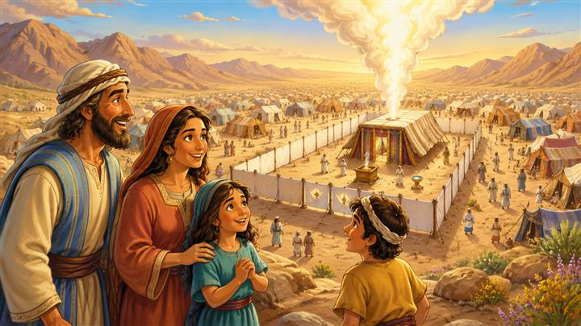
神還在那裡
先把整件事想一遍。神吩咐蓋會幕、住進營地正中央；祂教了五種祭；祂讓亞倫一家當祭司；祂教百姓分辨潔淨和不潔。
你看這一家人站在山坡上望過去——會幕還在，煙還在升。
可是問題還沒解決：百姓還是會犯錯，還是會有不潔的狀況。那神要怎麼繼續住下去？
利未記 16｜贖罪日：血潔淨聖所，活羊把罪帶離營地
「歸耶和華」的公山羊被獻上，牠的血被帶進聖所，用來潔淨至聖所、會幕與祭壇。處理的是神聖空間被罪與不潔影響的問題。
亞倫把百姓的罪孽、過犯與罪承認在活羊頭上，羊被送出營地、進到曠野。重點不是死亡，是移除——罪從群體中被帶離。
一個動作處理「污染」，一個動作處理「罪的移除」。最後，神的百姓不是因為自己突然變成完美的人，而是神設立禮儀，使祂仍然可以住在他們中間。
聖潔的神住在一群會犯罪、也會經歷不潔的百姓中間；罪與不潔所造成的污染要怎麼被處理，使神的同在可以繼續在他們中間？課程範例《利未記》16 章
這一章不是「以色列人犯了很多罪，所以找兩隻羊來替他們贖罪」。它是前面整段祭司敘事與潔淨條例，一路累積到這裡的回答——
神吩咐建造會幕、選擇住在百姓中間 → 利 1-7 設立祭物與獻祭秩序 → 利 8 祭司承接聖職 → 利 9 榮耀顯現 → 利 10 拿答、亞比戶擅自獻凡火而死 → 利 11-15 教導分辨潔淨與不潔 → 但罪與不潔仍會出現在共同體中 → 那麼，聖潔的神要怎麼繼續住在百姓中間？→ 神設立贖罪日。
所以本章的高潮不只是「一隻羊被送到曠野」，而是神主動設立贖罪與潔淨的秩序：聖所被潔淨、罪被帶離共同體，神仍然與祂的百姓同住。
知道贖罪日有兩隻羊、兩個方向：一隻的血向內潔淨聖所，一隻活著向外把罪帶離營地。
知道連大祭司自己也需要先贖罪，他不是站在制度之外的人。
知道這是一年一次的全面潔淨，不是「神一年只肯原諒一次」。
做錯事情之後，最自然的反應常常是否認、找理由、怪別人、藏起來——但罪不是靠否認被處理的。
亞倫是先把百姓的罪說出來，才把羊送走。
沒有人可以說「我夠好了，我不需要神處理我的問題」。
神沒有放棄我們；祂願意處理罪所造成的問題，讓我們可以重新來到祂面前。
被處理的罪，不是要讓人永遠停在羞恥裡。
贖罪日每年都要重來；《希伯來書》說，耶穌一次完成救贖。
要告訴你哥哥亞倫，不可隨時進聖所的幔子內、到櫃上的施恩座前。利未記 16:2
兩手按在羊頭上，承認以色列人諸般的罪孽、過犯，就是他們一切的罪愆，把這罪都歸在羊的頭上，藉著所派之人的手，送到曠野去。要把這羊放在曠野；這羊要擔當他們一切的罪孽，帶到無人之地。利未記 16:21-22
這要作你們永遠的定例：每逢七月初十日，要刻苦己心，甚麼工都不可做。利未記 16:29
凡祭司天天站著事奉神，屢次獻上一樣的祭物，這祭物永不能除罪。但基督獻了一次永遠的贖罪祭，就在神的右邊坐下了。希伯來書 10:11-12
神住在人中間。
人不能隨便靠近神。利未記把兩件事同時保留下來——神願意與百姓同住，祂的同在卻不能被隨便操作。
百姓並沒有因為有了祭司制度就變完美，罪與不潔仍然出現。
但神沒有離開，而是設立年度潔淨。神認真看待問題，也主動處理問題。
血被帶向聖所內部，潔淨神聖空間。
活羊被帶向營地之外，移除罪。兩個方向構成全章最有力的空間圖像。
贖罪日每一年都要再做一次。
耶穌一次完成，不需要年年重新獻上自己。這一組要放在最後講——先讓孩子知道贖罪日本來就是年度制度。
利未記 16 章開頭特別回到拿答、亞比戶死亡的事件，然後神說：「不可隨時進聖所的幔子內。」這不是要把神講成「不想讓人靠近的神」，而是先建立整章最大的張力：神已經選擇住在百姓中間，但神的同在是聖潔的，人不能按照自己的方式隨意進入。
接著神沒有把人永遠擋在外面，而是清楚規定亞倫要怎麼預備：帶著祭牲、洗身、穿上指定的細麻布聖服，並先為自己和本家獻贖罪祭。這個細節很重要——即使是大祭司，他本身也不是無罪的人。他不能站在百姓面前說「你們都有問題，我來替你們處理」。
然後是本章最容易講歪的地方。第 11-19 節不能只講成「動物代替罪人被處罰」。經文最明顯的動作，是祭牲的血被帶到神聖空間，對至聖所、會幕與祭壇進行潔淨。孩子可能以為「只有人需要被洗乾淨」，但經文突然告訴我們：連聖所和祭壇都需要被潔淨。罪與不潔不是假裝沒發生就消失，它們會使神聖秩序需要被重新潔淨。
第二隻羊也一樣。牠的核心不是死亡，而是移除——牠把百姓的罪帶離共同體。英文的 scapegoat 後來發展出「替罪羊／被迫替別人承擔責任的人」的意思，但利 16 章中活羊最重要的禮儀功能，是把罪帶到共同體之外。至於「阿撒瀉勒」這個希伯來詞，學術界對它的意思仍有爭議（曠野中的超自然存在、荒野地點、與「移除」有關的詞源都有人主張），兒童課程不需要把任何一種假說當作定論。
最後，這套禮儀被規定為每年七月初十日的定例。這不是說「神一年只願意原諒一次」——前面的利未記已經有日常祭祀與潔淨制度；16 章特別設立的是一年一次、針對整個神聖空間與共同體的全面性贖罪與潔淨。而正是這個「每年都要再來一次」的背景，讓《希伯來書》9-10 章可以用大祭司、聖所、血與年度重複的意象，重新理解耶穌一次完成的救贖。順序不能顛倒：先把利未記自己的故事說完整，再進入新約的福音連結。
| 起 | 長度 | 單元 | 內容 |
|---|---|---|---|
| 00:00 | 1'00" | 開場提問 |
|
| 01:00 | 10'00" | 經文故事 20 幀分鏡 |
|
| 11:00 | 1'30" | 遊戲規則 |
|
| 12:30 | 4'30" | 遊戲進行 |
|
| 17:00 | 3'00" | 反思總結 |
|
| 20:00 | — | 道具：背包 ×1、預寫紙條 ×20-25、空白紙條 ×5 | |

先把整件事想一遍。神吩咐蓋會幕、住進營地正中央；祂教了五種祭；祂讓亞倫一家當祭司；祂教百姓分辨潔淨和不潔。
你看這一家人站在山坡上望過去——會幕還在，煙還在升。
可是問題還沒解決：百姓還是會犯錯，還是會有不潔的狀況。那神要怎麼繼續住下去？
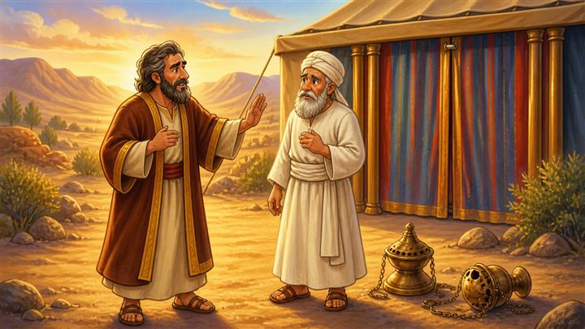
看這張圖的右下角——地上有兩個香爐，翻倒的，燒黑了。
那是拿答和亞比戶的。上禮拜我們講過，他們獻上神沒有吩咐的火。
利未記 16 章的第一句話，就是從這裡開始的。神在這個背景之下，對摩西說話。
亞倫的表情你看到了嗎？他剛失去兩個兒子。接下來的規定，是說給他聽的。
利未記 16:1
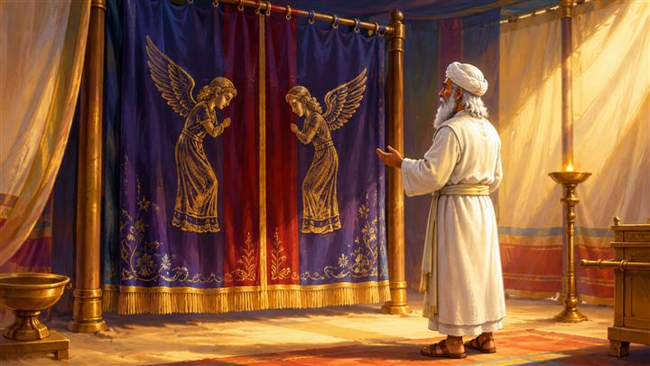
這道厚厚的幔子後面，是會幕最裡面的「至聖所」，裡面放著約櫃。
你看亞倫的手——伸出去了，但他沒有掀開。
神說的第一句話是：「不可隨時進聖所的幔子內。」
就連大祭司也不能說：「我是大祭司，我有 VIP 卡。」
★ 神不是愛百姓嗎？為什麼又不能隨便靠近祂？
你猜神接下來會說「那你們全部離我遠一點」，還是會給一個方法？
教學界線不要把神講成「不想讓人靠近的神」。這一段是建立張力，不是結論——結論在下一幀。
利未記 16:2
答案是：神給了方法。
你看摩西手上捧著什麼——摺得整整齊齊的白色細麻布衣服。旁邊是水盆和水壺。
神一條一條說清楚：要帶什麼祭牲、要怎麼洗、要穿什麼、要先做什麼。
不是人自己發明一條靠近神的路，是神主動規定人怎麼進來。
利未記 16:3-4
亞倫在洗。你看他旁邊桌上——那件金色藍色、鑲滿寶石的大祭司禮服，摺好放在那裡。
今天他不穿那件。
今天他要穿的是最簡單的白色細麻布。
這一天他進去，不是以「最大的那個人」的身分進去的。
教學界線經文沒有說「細麻布＝基督的義」。不要把衣服做成固定的一對一預表。
在為全國的百姓做任何事之前，亞倫要先做一件事。
你看他旁邊那頭公牛——那是為他自己和他家人準備的。
他不能走到百姓面前說：「你們都有問題，我來幫你們處理。」
★ 連大祭司都需要先為自己贖罪——那這個世界上，有沒有人可以說「我夠好了，我不需要神處理我」？
（等回答）他低著頭，手合起來。這一刻他不是大祭司，他就是一個需要被赦免的人。
利未記 16:6, 11
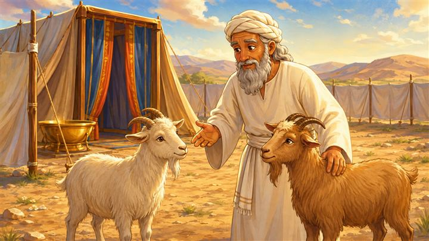
接下來，百姓要交出兩隻公山羊。
看清楚——兩隻。一隻白的，一隻棕的。牠們現在站在一起，長得差不多，都很健康。
可是等一下，這兩隻羊會走上完全不同的路。
利未記 16:5, 7
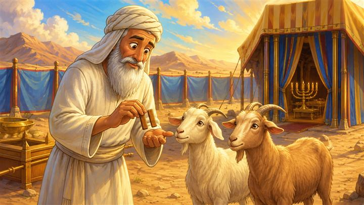
誰決定哪一隻走哪一條路？
不是亞倫挑的。你看他手上——兩支籤。他要拈鬮。
一支寫著「歸耶和華」，另一支寫著送到曠野去。
亞倫不是在挑「我比較喜歡哪一隻」。這整件事從頭到尾，都不是人自己安排的。
利未記 16:8
亞倫終於要進去了。可是他手上先拿的不是血，是香爐。
他從壇上取了火炭，放上香，煙升起來——你看，煙慢慢遮住約櫃上那個金色的蓋子。
經文說，這樣做是「免得他死亡」。
他站在那裡，抬頭看。這是全以色列只有一個人、一年只有一天可以看見的畫面。
利未記 16:12-13
然後他拿出公牛的血，用手指彈灑在贖罪蓋的前面。
注意他在做什麼——他不是把血抹在人身上。他是把血用在這個地方。
這是這一章一直在做的事：潔淨神聖的空間。
利未記 16:14
做完公牛的，他出來，宰了那隻「歸耶和華」的公山羊，然後端著羊的血再走進去一次。
看這個背影——幔子被撥開一條縫，裡面是金色的光。他一個人走進去。
經文特別說明為什麼：因為以色列人的不潔、過犯和一切的罪。
利未記 16:15-16
★ 至聖所處理完了。你覺得接下來，是要把百姓洗乾淨嗎？
（等回答，讓他們猜）
都不是。你看他走到外院來，蹲在祭壇旁邊，把血抹在祭壇的角上。
經文說：至聖所要潔淨、會幕要潔淨、祭壇也要潔淨。
原來需要被清乾淨的，不只是人，還有這些「地方」和「東西」。
因為罪不會只留在做錯的那個人身上——它會影響到整個地方。
利未記 16:16-19
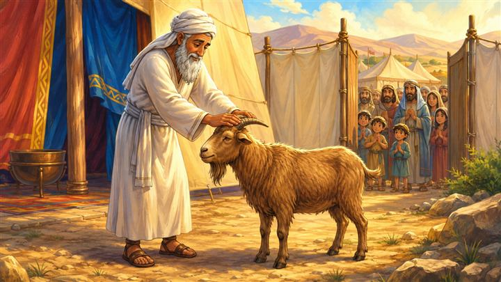
裡面的事都做完了。現在輪到第二隻——那隻活著的羊。
亞倫把手放在牠頭上。你看外面圍欄邊，百姓全部站著在看，小朋友把手合起來。
這件事是做給全部人看的。不是關起門來偷偷處理。
利未記 16:20-21
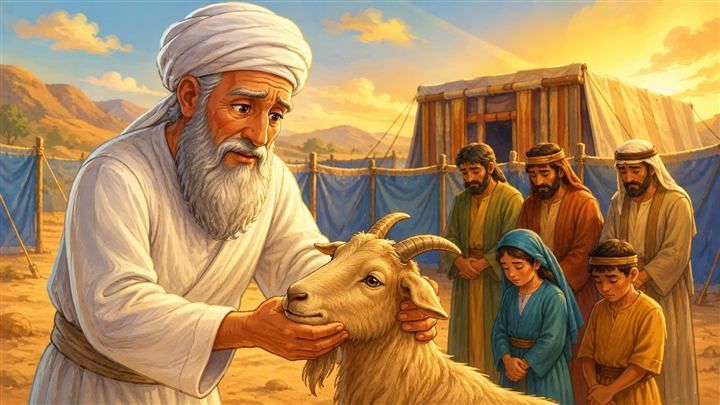
注意這裡——他是兩隻手都按在羊頭上。
然後他做了一件事：他開口，把百姓的罪一件一件說出來。
不是心裡想一想，是說出來，大聲說，讓大家聽見。
你看後面那些人，都低著頭。
罪不是靠假裝沒發生被處理掉的。要先說出來。
利未記 16:21
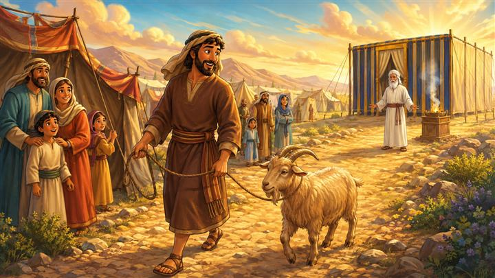
說完了，有一個人被指派，牽起繩子。
他開始走。經過帳篷、經過在看的人、經過小朋友。
經文叫他「所派之人」——這是他今天唯一的工作：把這隻羊帶出去。
利未記 16:21
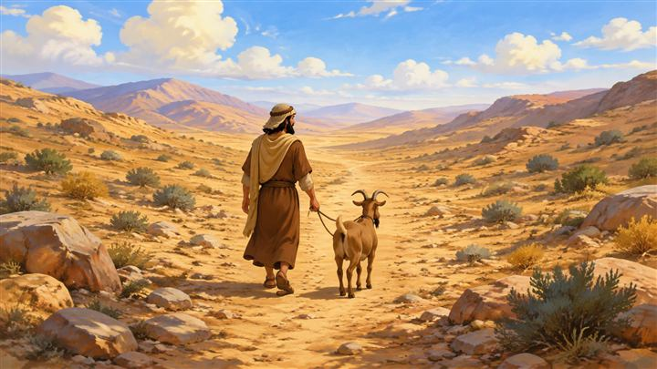
（這一段慢慢講，不要趕）
他走過營地的最後一個帳篷……
走出圍欄……
走上曠野的小路……
越走越遠……越走越遠……人變得好小好小……
一直走到再也看不見。
★ 牠把什麼帶走了？
（等回答）經文說：這羊要擔當他們一切的罪孽，帶到無人之地。
教學界線羊不是因為自己做錯事被趕出去，也不要把曠野講成「魔鬼住的地方」。重點只有一個：罪被帶離了這個群體。「阿撒瀉勒」的意思學者仍有爭議，不要當定論講。
利未記 16:22
那個送羊的人回來了。他做的第一件事是：洗衣服、洗身體。
你看他蹲在那裡搓衣服，臉上是輕鬆的。遠處祭壇的火還在燒。
亞倫也一樣——他回到會幕，脫下細麻布衣服，洗身，換回平常的衣服。
每一個參與的人，都被納進這個潔淨的程序裡。
利未記 16:23-28
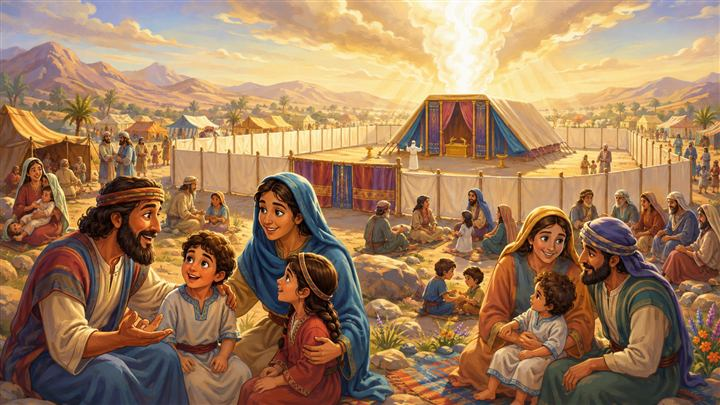
做完了。你看整個營地——大人坐著聊天，小孩在玩，會幕的煙還在升。
故事沒有停在「有人被處罰」。它停在一個恢復了秩序、仍然以神的同在為中心的營地。
而且神規定：每年七月初十，都要再做一次。不是因為上次失敗了，而是這本來就是每年維持秩序的方式。
利未記 16:29-34
今年做完了。明年呢？再來一次。後年呢？再來一次。
一年、一年、又一年。
很久很久以後，聖經有一卷書叫《希伯來書》。它就是用贖罪日的這些話——大祭司、聖所、血、每年重複——來講一件事：
耶穌是那位更好的大祭司。祂獻上自己，一次就完成了，不需要年年重來。
所以現在我們可以直接來到神面前。
教學界線這是第一次提到耶穌，前面 18 幀都要忍住。也不要把每個細節做成一對一對應（第二隻羊≠耶穌）。《希伯來書》的類比集中在大祭司、聖所、血與「一次完成」。
希伯來書 9-10 章
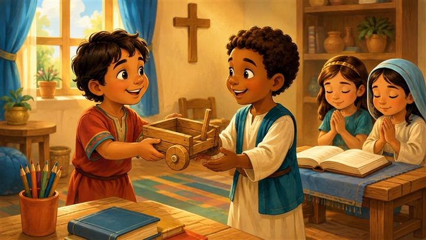
最後一張圖，時間跳到今天。
一個孩子把玩具還給另一個孩子。兩個人都在笑。旁邊有人在禱告，桌上放著聖經。
我們不用再找兩隻羊了。但這一章教我們的事沒有變——
做錯了，不是躲起來，也不是假裝沒發生。是承認、是處理、是修好。
然後記住最後這一句：神沒有放棄我們；祂願意處理我們的罪，讓我們可以重新來到祂面前。
「神不是愛人嗎？為什麼不能隨便進去？」
神愛人，也願意住在人中間；但神是聖潔的，我們不能把祂當作自己想怎麼操作都可以的對象。所以神自己告訴祭司要怎麼進入。
「不潔的人是不是做壞事？」
不一定。利未記裡有些不潔是身體自然發生的狀態或接觸造成的，不代表那個人做錯事。（上一週的重點。）
「為什麼連會幕和祭壇都要贖罪？」
因為利未記 16 章把人的罪與不潔想像成會使神聖空間需要潔淨。這也是為什麼贖罪日不只是處理個人的罪。
「那隻羊做錯什麼，為什麼要被送走？」
羊不是因為自己做錯事被趕出去。這是神設立的象徵性禮儀：百姓承認的罪被放在羊頭上，羊把這些罪帶離共同體。
「阿撒瀉勒是魔鬼嗎？」
我們不知道這個字原本精確指什麼，學者有不同看法。對這個故事來說，最重要的是羊被送到曠野，把罪帶離營地。
「為什麼要用血？」
在利未記裡，血跟生命密切相關；贖罪日中，祭牲的血被用來潔淨至聖所、會幕和祭壇。
「是不是一年只有這一天神才原諒人？」
不是。以色列平常也有其他祭祀和潔淨制度。贖罪日特別是一年一次對整個聖所與共同體進行全面性的潔淨。
「我們現在也要找兩隻羊嗎？」
基督徒不再實行利未記的聖所祭祀制度。《希伯來書》告訴我們，耶穌一次完成救贖，使我們可以來到神面前。
這一課最容易掉進兩個坑。第一個：「神很聖潔，所以小朋友不要犯罪」——只停在這裡，贖罪日就變成恐嚇式道德教育。第二個：「第二隻羊就是耶穌，耶穌代替我們被處罰」——這把整章講小了。本章有兩個互補的圖像：血潔淨聖所、活羊移除罪。
第 19 幀之前不要提耶穌。先把利未記自己的故事說完整，再進入新約連結。而且《希伯來書》的類比集中在大祭司、聖所、血與「一次完成」——不要把每個細節都變成耶穌的密碼（細麻布、香爐、兩隻羊都不要做一對一對應）。
第 16 幀要慢到讓孩子不耐煩為止。這是全章高潮。不要三秒鐘講完「羊被送到曠野」——要一步一步描述：走過帳篷、走出圍欄、走上小路、越走越遠、看不見了。然後才問「牠把什麼帶走了？」
不要把阿撒瀉勒講成確定的「代罪羔羊」。這個希伯來詞的意義仍有爭議。孩子只要知道：活羊被送到曠野，把百姓的罪帶離營地。同樣地，不要把曠野簡化成「魔鬼住的地方」——聖經其他地方的曠野也可以是遇見神的地方。
不要把血講成「神一定要有人死才肯消氣」。在利 16 章，血被用來潔淨神聖空間。可以談罪的嚴重，但不要把整個祭祀制度縮成單一的刑罰代替公式。第 12 幀（連祭壇也要潔淨）就是最好的反證。
第 06 幀是這一課的謙卑點。連大祭司都要先為自己贖罪。如果班上有孩子很習慣當「乖的那一個」，這一幀是講給他聽的：沒有人可以說「我夠好了，不需要神處理我」。
遊戲的承諾一定要守住。紙條不打開、不念出來、結束後當著孩子的面銷毀。如果有孩子自己寫了東西又反悔，讓他當場拿回去，不要問為什麼。這個信任比遊戲效果重要得多。
「明年呢？」的快問快答不要省。那個重複感是進入《希伯來書》唯一自然的橋。如果直接說「耶穌一次完成」，孩子感受不到「一次完成」有什麼了不起。
不要用這一課製造羞恥。被處理的罪，不是要讓人永遠停在羞恥裡；贖罪日的方向是恢復。這跟 9/13（責任感 vs 羞恥感）和 9/20（不潔 ≠ 犯罪）是同一條線，三週要一致。
時間快超過時的取捨順序：先砍第 07、17 幀（共省 40 秒），再把遊戲的「輪流背背看」從 4 人減到 2 人。不要砍第 16 幀，也不要砍反思總結的「明年呢」。